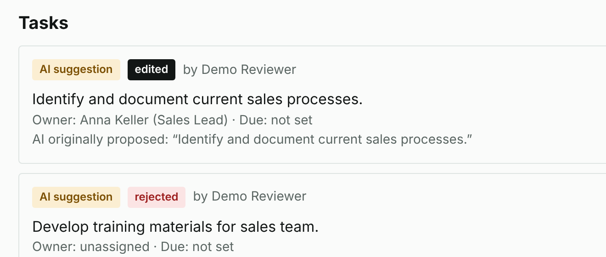

RASHMI SINGH
01 — 05
Business understanding, meeting emerging technology.
RASHMI SINGH
02 — 05
EVIDENCE
~,000
students reached by one programme I owned end to end
DMart Foundation · 2022–24
RASHMI SINGH
03 — 05
EVIDENCE
+
educators recruited and trained a year
DMart Foundation · 2022–24
RASHMI SINGH
04 — 05

THE REAL PROTOTYPE · EVERY AI SUGGESTION WAITS FOR A PERSON
EVIDENCE
of 8
sample requests completed by my working AI prototype
Intelligent Business Operations Assistant · 2026
RASHMI SINGH
05 — 05
~100,000
STUDENTS
200+
EDUCATORS / YEAR
8 of 8
AI TEST REQUESTS
I connect business needs with the people, processes and technology that move them forward.
Rashmi Singh · rashmissingh97@gmail.com · linkedin.com/in/-rashmi-singh- · rashmi-singh.rashmissingh97.workers.dev